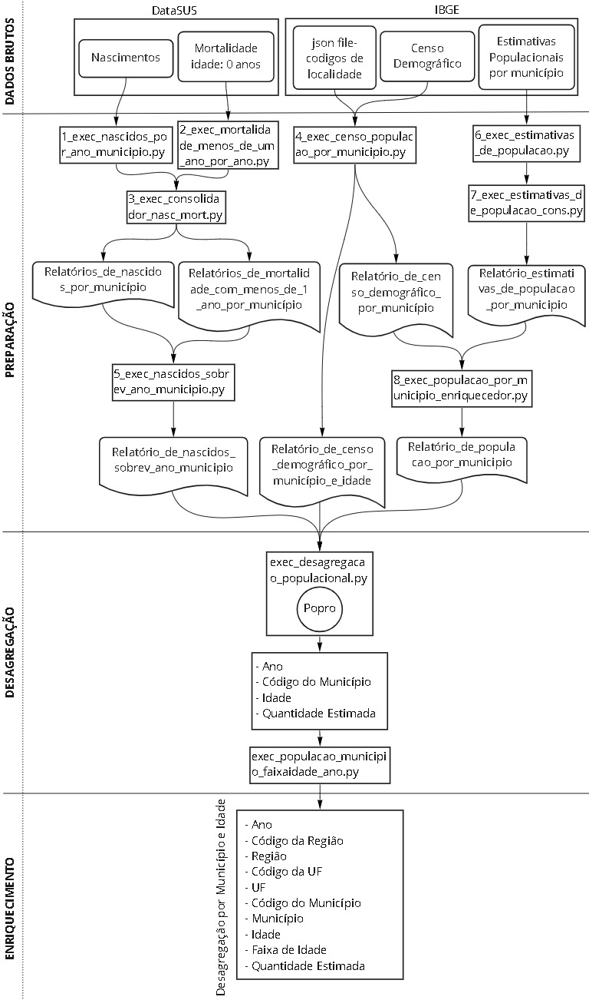
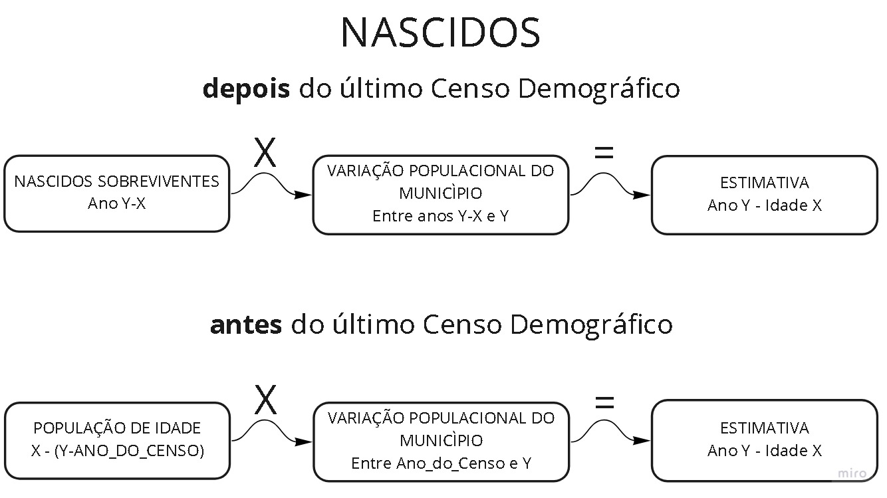

Projeção populacional por município e idade
Por fontes oficiais do IBGE, não é obtido dados populacionais segmentado por Município e Idade. Sendo assim, uma metodologia de desagregação populacional a partir do Censo Demográfico e atualizado por dados anuais obtidos por órgãos oficiais se faz necessária.

Imagem: Fluxo de dados
Fontes
- Datasus:
- nascidos: https://datasus.saude.gov.br/nascidos-vivos-desde-1994
- mortalidade: https://datasus.saude.gov.br/mortalidade-desde-1996-pela-cid-10
- Filtro: faixa etária: menor 1 ano
- IBGE:
- estimativas populacionais por município: https://ftp.ibge.gov.br/Estimativas_de_Populacao
- Censo demográfico: https://sidra.ibge.gov.br/tabela/200
- Extra:
- Arquivo json de metadados capturado do fluxo de dados no navegador durante o carregamento do relatório no site do IBGE.
Observação:Este arquivo é um dicionário de dados que relaciona os nomes das localidades existentes no relatório do Censo e seus códigos normalizados pelo IBGE. Este dicionário é necessário por os nomes de localidades no relatório não estarem compatíveis com as bases publicadas pelo IBGE que relaciona Nome e Código de localidade, tal como o relatório de estimativas populacionais. Assim os nomes das localidades não podem servir como chave de consolidação, sendo necessário resgatar o código da localidade. A falta de compatibilidade se dá por variações na escrita dos nomes das localidades, como abreviações ou ausências de sinais ortográficos.
- Arquivo json de metadados capturado do fluxo de dados no navegador durante o carregamento do relatório no site do IBGE.
Metodologia

Imagem: Metodologia Projeção Populacional
Desagregação populacional por município e idade desenvolvida pelo TCEduca e publicada na nota técnica Memo. DAE n° 020/2021.
ETL
- Pré processamento: https://github.com/aiboxlab-pne/dados/tree/main/Scripts/ETL/Populacao/metodo-tceduca/notebook
- 1 - exec_nascidos_por_ano_municipio.py
- Limpa e tabula os relatórios de input de nascidos
- 2 - exec_mortalidade_menos_de_um_ano_por_ano.py
- Limpa e tabula os relatórios de input de mortalidade
- 3 - exec_consolidador_nasc_mort.py
- Objetivos:
- Consolida os ‘diversos relatórios de cada ano’ num único relatório.
- Output:
- Relatórios de nascidos por município
- Relatórios de mortalidade com menos de 1 ano por município
- Objetivos:
- 4 - exec_censo_populacao_por_municipio.py
- Limpa e tabula o relatório de input do último Censo demográfico. Também enriquece com código de localidade a partir do arquivo json de metadados.
- Output:
- Relatório de censo demográfico por município e idade. Contém o total populacional por município segmentado por idade no ano do relatório.
- Relatório de censo demográfico por município. Contém o total populacional por município no ano do relatório.
- 5 - exec_nascidos_sobrev_ano_municipio.py
- Objetivo:
- Processa o relatório de "nascidos por idade e município" com o de "mortalidade de 0 anos por idade e município", formando o relatório "Nascidos sobreviventes por ano e município". O relatório "Nascidos sobreviventes por ano e município" serve de input para a lib Popro, que realiza o processo de desagregação populacional.
- Input:
- Relatório "nascidos_por_ano_municipio.csv".
- Colunas: ['ano', 'uf_codigo', 'municipio_codigo', 'quantidade']
- Gerado via:
exec_consolidador_nasc_mort.py
- Relatório "mortalidade_menos_de_um_ano_por_ano_por_municipio.csv".
- Colunas: ['ano', 'uf_codigo', 'municipio_codigo', 'quantidade']
- Gerado via:
exec_consolidador_nasc_mort.py
- Relatório "nascidos_por_ano_municipio.csv".
- Output:
- Relatório "nascidos_sobrev_ano_municipio.csv".
- Colunas: ['ano', 'uf_codigo', 'municipio_codigo', 'nascidos_sobreviventes']
- Relatório "nascidos_sobrev_ano_municipio.csv".
- Objetivo:
- 6 - exec_estimativas_de_populacao.py
- Objetivos:
- Trata e tabula relatório de "Estimativas de População" extraído do FTP do IBGE
- Input:
- input_file_path: caminho do relatório bruto
- year: ano do relatório
- Output:
- output_file_path: caminho do relatório tratado
- Objetivos:
- 7 - exec_estimativas_de_populacao_cons.py
- Objetivos:
- Consolida todos os relatório tabulados de estimativas de população
- Input:
- input_folder_path: Caminho da pasta onde se encontram os relatórios tabulados de estimati vas de população
- Output:
- output_file_path: Relatório estimativas_de_populacao_por_municipio. Relatório csv com colunas: ['ano', 'cod_uf', 'cod_munic', 'populacao_estimada']
- Objetivos:
- 8 - exec_populacao_por_municipio_enriquecedor.py
- Objetivos:
- Consolida o “Relatório de censo demográfico por município” com o relatório de “Estimativa populacional por município”, apenas para acrescer os dados populacionais do ano do Censo.
- input:
- file_path_estimativas_populacao:
- Relatório csv "estimativas_de_populacao_por_municipio" contendo os dados tabulados e consolidados de estimativas de população por município, faltando os dados do ano do Censo. Colunas: ['ano', 'cod_uf', 'cod_munic', 'populacao_estimada']
- file_path_censo_municipio:
- Relatório csv "censo_populacao_por_municipio" contendo os dados tabulados do censo populacional por município no ano do Censo. Colunas: ['quantidade', 'municipio_nome', 'uf_sigla', 'municipio_codigo', 'uf_codigo', 'ano']
- file_path_estimativas_populacao:
- Output:
- file_path_populacao_por_municipio:
- Relatório csv "populacao_por_municipio" contendo os dados populacionais tanto do ano do Censo quanto dos demais anos do relatório de estimativa populacional. Colunas: ['ano', 'cod_uf', 'cod_munic', 'quantidade']
- file_path_populacao_por_municipio:
- Objetivos:
- 1 - exec_nascidos_por_ano_municipio.py
- Desagregação:
- Biblioteca: Popro - https://pypi.org/project/popro/
- Objetivos:
- Gerar relatório populacional desagregado por município e idade, para todos os anos existentes nos relatórios de Nascidos sobreviventes e as idades existentes no relatório do Censo.
- Intervalo de dados:
- Anos: 2014 a 2020.
- Idades: 0 a 24 anos.
- exec_desagregacao_populacional.py
- Objetivos:
- Gera dados de estimativa populacional desagregado por ano, município e idade
- Input:
- Nascidos sobreviventes. Colunas: ['ano', 'uf_codigo', 'municipio_codigo', 'nascidos_sobreviventes']
- Censo demográfico por município e idade. Colunas: ['idade', 'quantidade', 'municipio_nome', 'uf_sigla', 'municipio_codigo', 'uf_codigo', 'ano']
- População por ano e municipio: Colunas: ['ano', 'cod_uf', 'cod_munic', 'quantidade']
- Output:
- Estimativa populacional desagregada por ano, município e idade. Colunas: ['ano', 'municipio_codigo', 'idade', 'quantidade_estimada', 'estado_codigo']
- Objetivos:
- Oportunidade de melhoria:
- Ampliar fronteira de 24 anos.
- Fronteira causada por o relatório do censo demográfico segmentar por idades únicas até 24 anos, onde depois dessa idade os dados são informados por faixas etárias.
- Recalcular o volume populacional do censo de 2010 para cada idade, com base nos microdados amostrais e as instruções para expansão em dados universais.
- Instrução para a expansão:
- Acesso: IBGE-Notas Metodológicas - Microdados da Amostra
- Dados de expansão
- Acesso: IBGE-Expansao_xls
- Nota: Necessita de tabela que relaciona 'área de ponderação' com código de município
- Ampliar fronteira de 24 anos.
-
Enriquecimento com faixa de idade
- exec_populacao_municipio_faixaidade_ano.py
- Objetivo: Geração de relatório projecao_da_populacao por ano, municipio e faixa de idade.
- input:
- Relatório projecao_da_populacao por ano, municipio e idade. Colunas: ['ano', 'municipio_codigo', 'idade', 'quantidade_estimada', 'estado_codigo']
- output:
- Relatório projecao_da_populacao por ano, municipio e faixa de idade. Colunas: ['ANO', 'FK_ESTADO_ID', 'FK_MUNICIPIO_ID', 'FK_FAIXAS_ETARIAS_ID', 'QUANTIDADE_ESTIMADA', 'FK_METODO_ID']
- exec_populacao_municipio_faixaidade_ano.py
-
Inserção no banco de dados:
- exec_gerar_fct_progracao_populacional.py
- Objetivo: Criar tabela no banco de dados staging e efetua a ingestão dos dados
- Input:
- projecao_da_populacao_por_ano_municipio_faixaidade. Colunas: ['ANO', 'FK_ESTADO_ID', 'FK_MUNICIPIO_ID', 'FK_FAIXAS_ETARIAS_ID', 'QUANTIDADE_ESTIMADA', 'FK_METODO_ID']
Débito técnico:Implantar capacidade de ingerir dados de um único novo ano.
- projecao_da_populacao_por_ano_municipio_faixaidade. Colunas: ['ANO', 'FK_ESTADO_ID', 'FK_MUNICIPIO_ID', 'FK_FAIXAS_ETARIAS_ID', 'QUANTIDADE_ESTIMADA', 'FK_METODO_ID']
- exec_gerar_fct_progracao_populacional.py